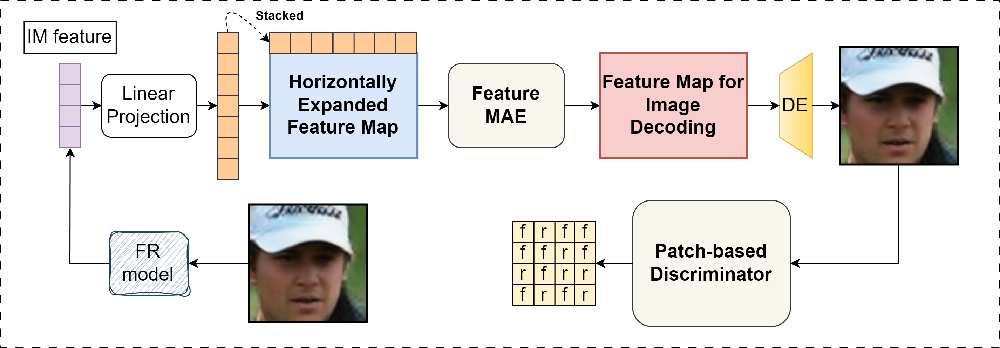

Vec2Face: Scaling Face Dataset Generation with Loosely Constrained Vectors


Abstract
This paper studies how to synthesize face images that allow for effective training of face recognition models, in response to legal constraints in this field. To synthesize such training data, identity generation and facial attribute augmentation are two useful strategies to increase inter-class separability and increase intra-class variations, two beneficial factors widely acknowledged by the community. However, existing works 1) are typically limited in generating well separable different identities and 2) either neglect or use a separate editing model for attribute augmentation.
In this work, we propose Vec2Face, a single model that only uses a vector as input and can flexibly generate and control face images and their attributes. Composed of a modified masked autoencoder and an image decoder, Vec2Face is supervised by face image reconstruction and can be conveniently used in inference. Specifically, using vectors with low similarities among themselves as inputs, Vec2Face generates well-separable identities; randomly perturbing an input vector within a reasonable range allows Vec2Face to generate faces of the same identity but with robust variations in face attributes; it is also possible to generate images with designated attribute by adjusting vector values with a gradient descent based method. Therefore, high inter-class separability and intra-class variations are achieved using a single model.
Vec2Face allows us to efficiently synthesize as many as 200K identities with 10 million images without observing the accuracy saturation. Face recognition models trained with the resulting datasets achieve the state-of-the-art performance, with the accuracy on CALFW test set being the first higher than the same-scale real dataset.
Method Overview
Quantitative Results
| Methods | Venue | # images | LFW | CFP-FP | CPLFW | AgeDB | CALFW | Avg. |
|---|---|---|---|---|---|---|---|---|
| IDiff-Face† | ICCV23 | 0.5M | 98.00 | 85.47 | 80.45 | 86.43 | 90.65 | 88.20 |
| DCFace† | CVPR23 | 0.5M | 98.55 | 85.33 | 82.62 | 89.70 | 91.60 | 89.56 |
| Arc2Face† | - | 0.5M | 98.81 | 91.87 | 85.16 | 90.18 | 92.63 | 91.73 |
| DigiFace☆ | WACV23 | 1M | 95.40 | 87.40 | 78.87 | 76.97 | 78.62 | 83.45 |
| SynFace♦ | ICCV21 | 0.5M | 91.93 | 75.03 | 70.43 | 61.63 | 74.73 | 74.75 |
| SFace♦ | IJCB22 | 0.6M | 91.87 | 73.86 | 73.20 | 71.68 | 77.93 | 77.71 |
| IDnet♦ | CVPR23 | 0.5M | 92.58 | 75.40 | 74.25 | 63.88 | 79.90 | 79.13 |
| ExFaceGAN♦ | IJCB23 | 0.5M | 93.50 | 73.84 | 71.60 | 77.37 | 83.40 | 81.62 |
| SFace2♦ | T-BIOM24 | 0.6M | 95.60 | 77.11 | 74.60 | 77.37 | 83.40 | 81.62 |
| Langevin-Disco♦ | - | 0.6M | 96.60 | 73.89 | 74.77 | 80.70 | 87.77 | 82.75 |
| HSFace10K♦ | - | 0.5M | 98.87 | 88.46 | 85.98 | 92.90 | 93.37 | 91.92 |
| CASIA-WebFace (Real) | 0.49M | 99.42 | 96.56 | 89.73 | 94.08 | 93.32 | 94.62 | |
Qualitative Results
Comparison between available synthetic datasets

BibTeX
@article{wu2024vec2face,
title={Vec2Face: Scaling Face Dataset Generation with Loosely Constrained Vectors},
author={Wu, Haiyu and Singh, Jaskirat and Tian, Sicong and Zheng, Liang and Bowyer, Kevin W.},
year={2024}
}